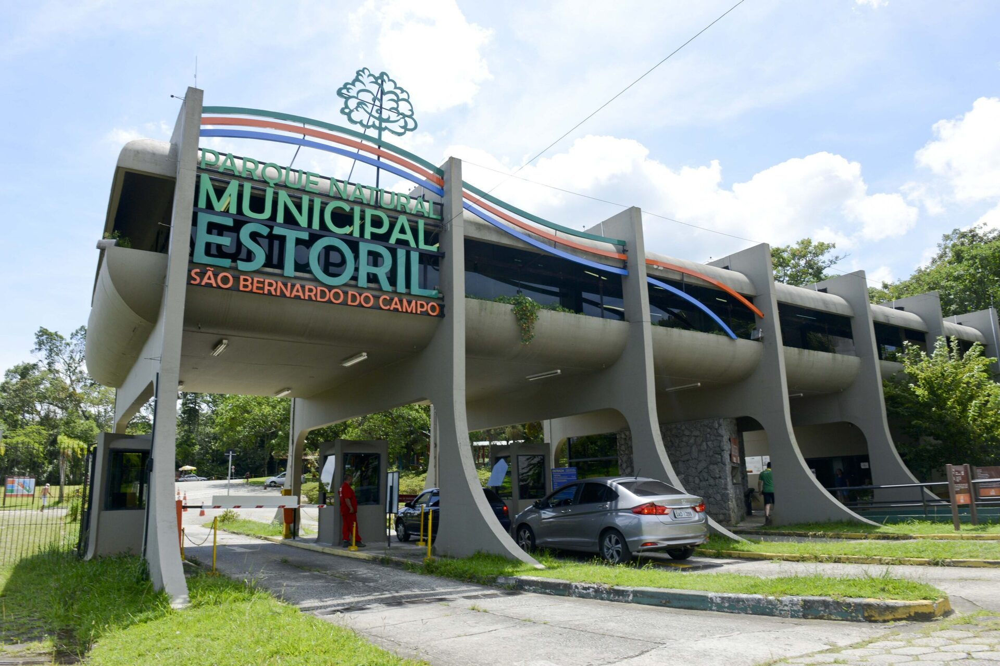

Parque Estoril
Este é um dos pontos turísticos de São Bernardo do Campo onde você vai encontrar vários elementos fantásticos, que são capazes de encantar visitantes de todas as faixas etárias. Há, por exemplo, um teleférico, pedalinhos, algumas trilhas dentro da mata e, pasme: até um zoológico municipal, com mais de 450 espécies de animais.